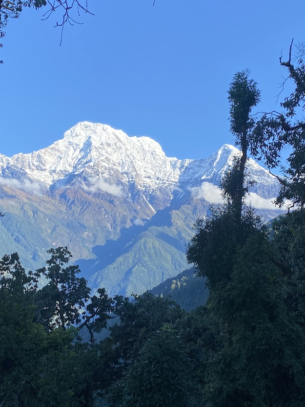
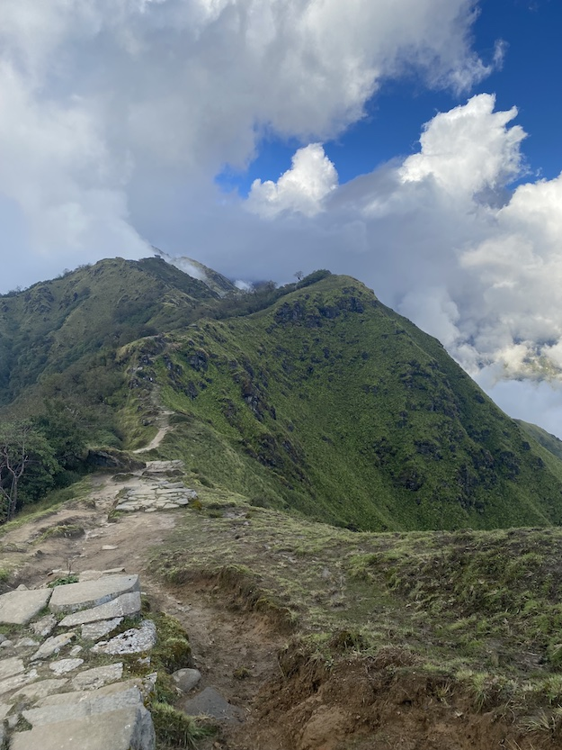
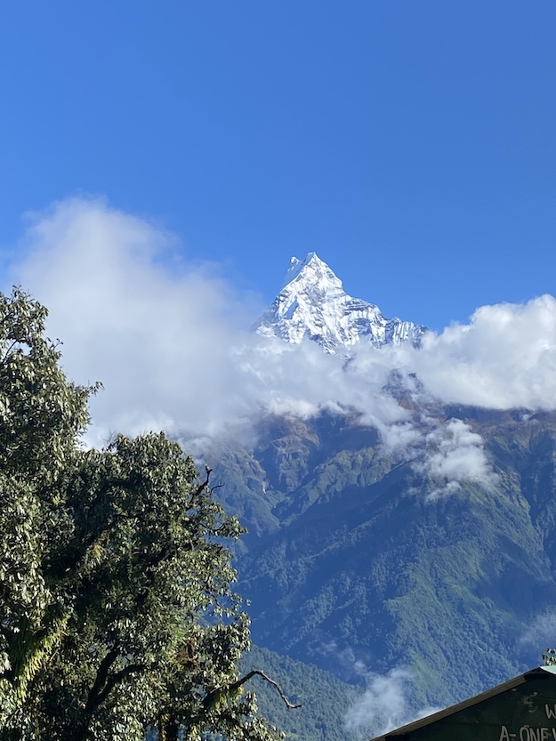

Mardi Himal, located in Nepal, rises to an altitude of 5,587 meters. It is a relatively new trekking route compared to many of Nepal’s more established trails, making it a great choice for those seeking a quieter and more serene experience. Reaching the main viewing point—situated at 4,200 meters—typically takes 3–4 days, though the trail can be quite challenging at times.
  If you want to experience stunning mountain views up close but don’t have much time, this trek is one of the best options available. From the viewing point, you can enjoy breathtaking panoramas of Mount Dhaulagiri, Tin Chuli, Mardi Himal, and Machhapuchhre (also known as the Fish-Tail Mountain).
For hikers who prefer to take their time, there are plenty of hotels, guesthouses, and restaurants along the way. The local people are incredibly friendly and helpful, making the journey even more enjoyable. Slow hikers usually take around 7–9 days to reach the viewing point, allowing them to fully appreciate the landscape and cultural experience.
Have you been to Mardi Himal yourself, or is it something you're planning?